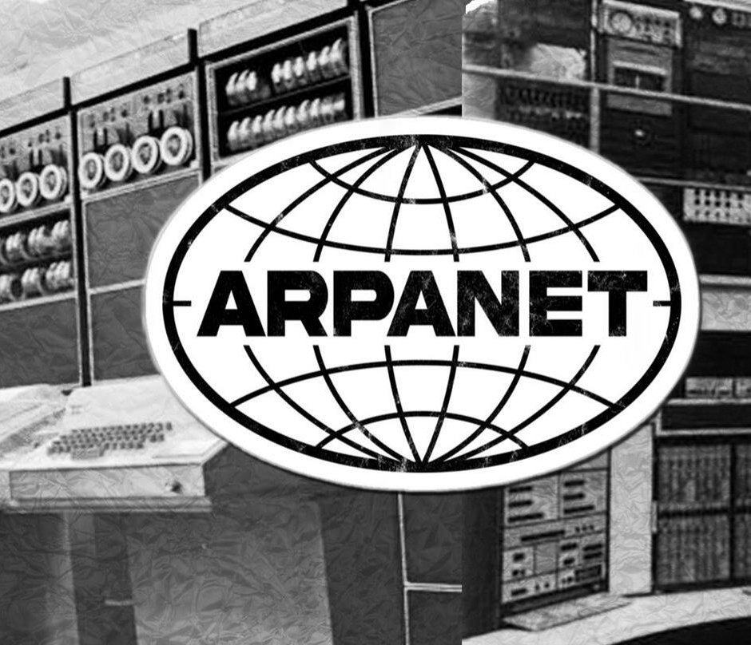

1969: ARPANET |
||
|
 |
||
| publicidad |
ARPANET fue desarrollada por la Advanced Research Projects Agency (ARPA) del Departamento de Defensa de Estados Unidos durante la Guerra Fría. Su propósito era crear una red de comunicación resistente que permitiera compartir recursos computacionales entre universidades y centros de investigación. La idea fundamental era que la red no dependiera de un único punto central. Si un nodo fallaba, la información podría encontrar otra ruta. Este principio es la base estructural del Internet moderno. Primera conexión en 1969El 29 de octubre de 1969 se realizó la primera transmisión entre la Universidad de California en Los Ángeles (UCLA) y el Stanford Research Institute. Se intentó enviar la palabra "LOGIN", pero el sistema colapsó después de transmitir "LO". Universidades conectadas inicialmente
|
publicidad |